Módulo 2: Introducción al {tidyverse} y a {ggplot2}
Mauricio Moreno, PhD
sábado 21 de noviembre de 2026
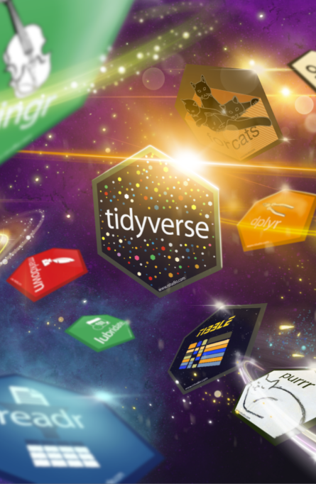
Hoy
- Tipos de tablas y datos ordenados
- El
{tidyverse}y el operador de cascada - Cambiar formatos con
{tidyr} - Operaciones con tablas en
{dplyr} - Introducción a
{ggplot2}: función de inicio, geometrías, estéticas y capas
Los datos de hoy
pinguinos: la tabla de los pingüinos de Palmer que ya usamos en el módulo 1.airqualityde base R: tabla que contiene datos de la calidad de aire en Nueva York de mayo a septiembre de 1973
Tipos de tablas y datos ordenados
Tipos de tablas
- Existen básicamente dos tipos de tablas de datos de acuerdo a su formato: ancho (wide format) y largo (long format)
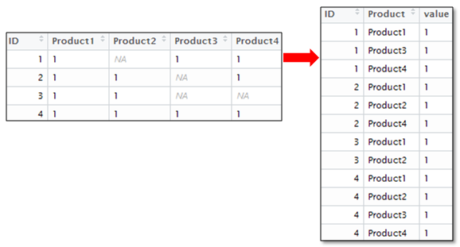
Datos ordenados (Tidy data)
Cuando llevamos registro de datos es muy común usar tablas de Excel.
Por la libertad que tenemos en este software, es fácil el dejarnos llevar por prácticas que luego nos causarán dolores de cabeza.
Por ello me parece importante el mencionar unas cuantas sugerencias para llevar el registro de datos:
Consistencia
Escoge buenos nombres
Escribir fechas en formato ISO 8601
Evitar filas/celdas vacías donde no son necesarias
Pon una sola cosa a la vez
Evita usar resaltador/colores de fuentes
La mayor parte de ejemplos aquí tomados provienen de Data organization in Spreadsheets y las figuras del curso Tidyverse Skills for Data Science.
Consistencia
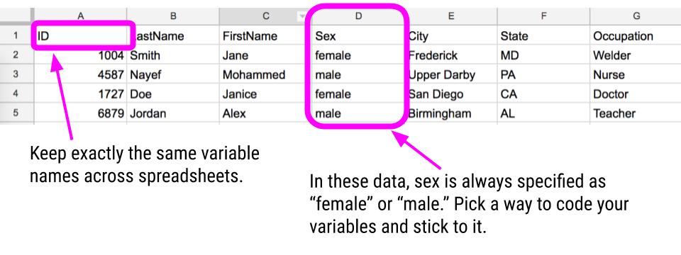
Escoge buenos nombres
Como ya habíamos mencionado, R puede presentar problemas con el nombre que le asignemos a nuestras columnas (“variables”):
Si comienza con un número, antepondrá
X.al nombre de la columnaSi tiene caracteres especiales, puede dar problemas en el espaciado o de lectura
Adicionalmente, podemos mencionar las siguientes recomendaciones
| Esto está bien | ¡Evita esto! | |
|---|---|---|
| Espacios extras | "masculino" |
"masculino " |
| Usa guiones bajos en lugar de espacios vacíos | cultivo_control |
cultivo control |
| Usa nombres informativos | cultivo_control |
C1 |
Fechas en formato ISO 8601
Ya habíamos mencionado anteriormente que dar formato a fechas puede resultar difícil (aunque no imposible).
Como parte de la consistencia, es recomendable que cuando trabajamos con fechas, registrarlas como “YYYY-MM-DD”.
Este formato es conocido como ISO 8601 y es reconocido sin problema por R (y otros lenguajes).
Dependiendo de la configuración de nuestro ordenador, fechas en Excel como “14-Feb-23” pueden interpretarse mal o no reconocerse como fechas.
Evitar filas/celdas vacías
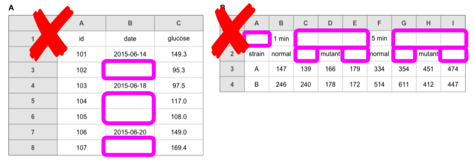
Una sola cosa a la vez
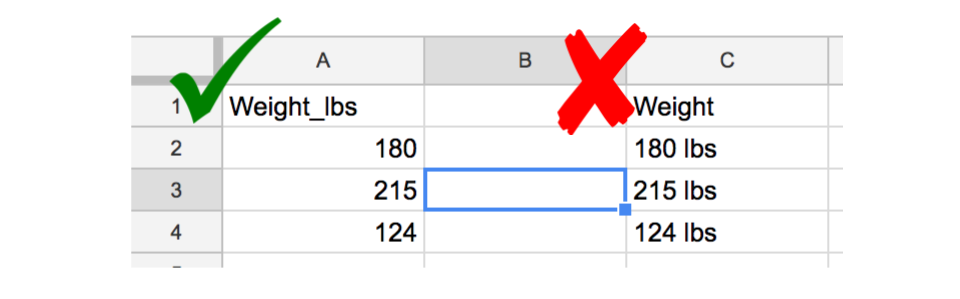
Evita resaltar/cambiar colores
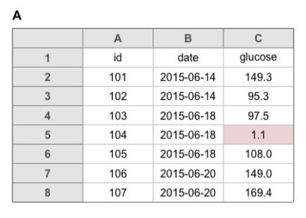
Ejemplos de tablas “problemáticas”
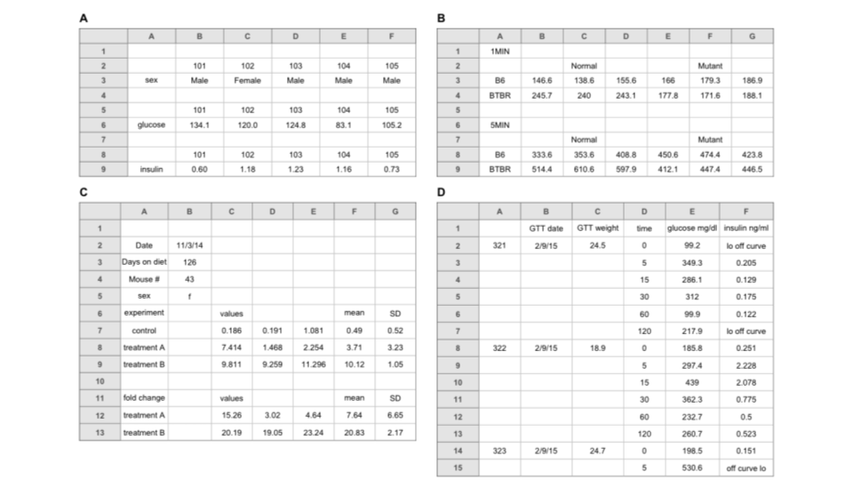
Ejemplos de tablas “problemáticas”
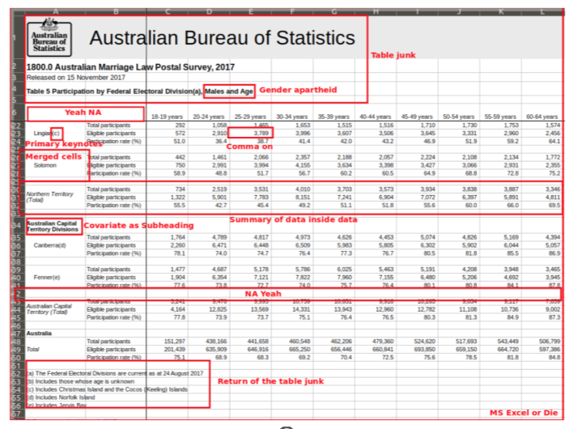
Principios de datos ordenados
Propuestos por Hadley Wickham en su artículo titulado Tidy Data.
Son sugerencias que Wickham formula para armonizar la manera de registrar datos y su posterior procesamiento en modelos de ciencias de datos (discutiblemente estas sugerencias ya existían inherentemente en el lenguaje SQL).
Tiene como premisa que los datos estén en una tabla rectangular: filas y columnas, sin celdas combinadas ni varias tablas en una misma hoja.
Las tablas rectangulares nacen de nuestra predisposición a registrar datos de esta manera.
Principio 1: Una columna por variable
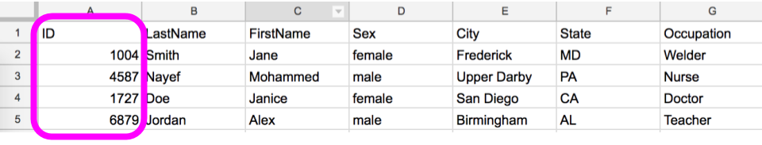
Principio 2: Una observación por fila
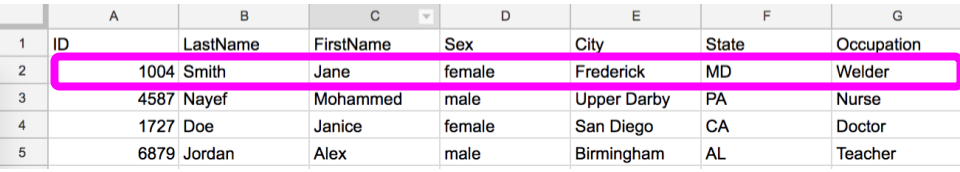
Principio 3: Una hoja de datos por tipo de datos
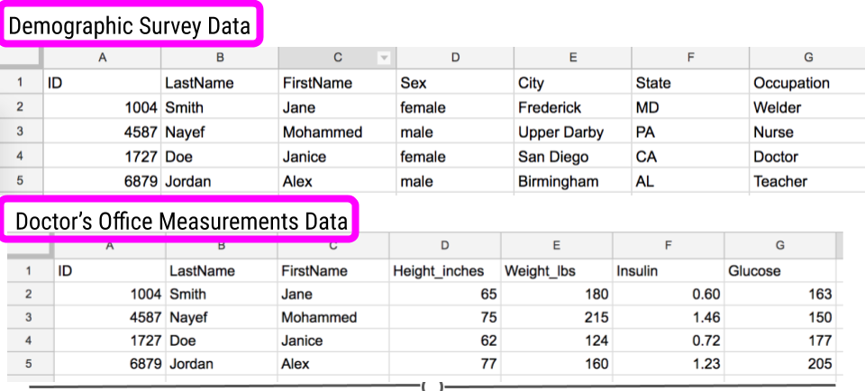
Principio 4: Una columna en común para unir tablas
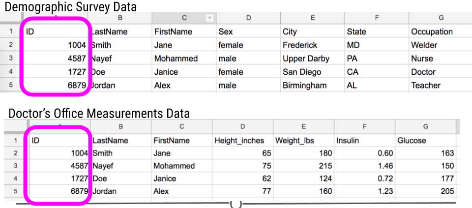
El {tidyverse}
¿Qué es el {tidyverse}?
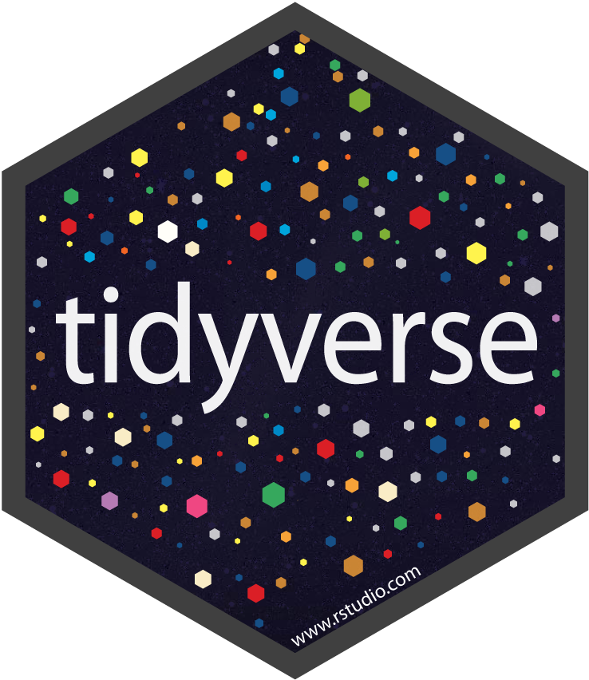
- Una colección de paquetes que comparten una misma forma de trabajar con datos.
{readr}importa,{tidyr}ordena,{dplyr}transforma,{ggplot2}grafica.- Las funciones tienen nombres de verbos:
filter(),select(),mutate(),summarise(). - Todas reciben una tabla como primer argumento y devuelven una tabla.
Tibbles
- Un
tibblees undata.framemoderno: se imprime mejor (solo las primeras filas y el tipo de cada columna) y nunca cambia los nombres de las columnas. - Todo lo que funciona con un
data.framefunciona con untibble. - Para convertir:
as_tibble(tabla)yas.data.frame(tabla).
Operador de cascada
El operador de cascada:
%>%es una función de la librería{magrittr}.Entendamos a
%>%como la palabra “entonces”. En términos sencillos, es algo como: “Tengo harina%>%hago pan”En lenguaje R, esto se interpreta como si tuviéramos un objeto
Asobre el cual deseamos aplicar una funciónB. Esto se vería como:B(A)Alternativamente, podemos expresarlo como
A %>% B.En base R:
D(C(B(A)))Con el operador de cascada:
A %>% B %>% C %>% D
Operador de cascada
Sin el operador, leemos de adentro hacia afuera:
Con %>%, leemos de izquierda a derecha, como una receta: “toma esto, y luego haz aquello”.
x %>% f(y) es lo mismo que f(x, y). En RStudio: Ctrl + Shift + M. Desde la versión 4.1, R también tiene su propio operador, |>, que funciona casi igual; en este curso usaremos %>%.
Cambiar el formato con {tidyr}
Formato ancho y formato largo
De formato ancho a largo
Utilizaremos la función
pivot_longer()del paquete{tidyr}con la tabla de baseairqualityCon
names_toyvalues_toelegimos los nombres de las nuevas columnas.
Formato ancho y formato largo
De formato ancho a largo
Utilizaremos la función
pivot_longer()del paquete{tidyr}con la tabla de baseairqualityCon
names_toyvalues_toelegimos los nombres de las nuevas columnas.
tabla_larga <- airquality %>%
pivot_longer(-c(Month, Day), names_to = "variable", values_to = "valores")
tabla_larga# A tibble: 612 × 4
Month Day variable valores
<int> <int> <chr> <dbl>
1 5 1 Ozone 41
2 5 1 Solar.R 190
3 5 1 Wind 7.4
4 5 1 Temp 67
5 5 2 Ozone 36
6 5 2 Solar.R 118
7 5 2 Wind 8
8 5 2 Temp 72
9 5 3 Ozone 12
10 5 3 Solar.R 149
# ℹ 602 more rowsFormato ancho y formato largo
De formato largo a ancho
- Utilizaremos la función
pivot_wider():names_fromindica de qué columna salen los nombres de las nuevas columnas yvalues_from, de cuál salen sus valores.
Formato ancho y formato largo
De formato largo a ancho
- Utilizaremos la función
pivot_wider():names_fromindica de qué columna salen los nombres de las nuevas columnas yvalues_from, de cuál salen sus valores.
tabla_ancha <- tabla_larga %>%
pivot_wider(names_from = "variable", values_from = "valores")
tabla_ancha# A tibble: 153 × 6
Month Day Ozone Solar.R Wind Temp
<int> <int> <dbl> <dbl> <dbl> <dbl>
1 5 1 41 190 7.4 67
2 5 2 36 118 8 72
3 5 3 12 149 12.6 74
4 5 4 18 313 11.5 62
5 5 5 NA NA 14.3 56
6 5 6 28 NA 14.9 66
7 5 7 23 299 8.6 65
8 5 8 19 99 13.8 59
9 5 9 8 19 20.1 61
10 5 10 NA 194 8.6 69
# ℹ 143 more rowsOperaciones con tablas en {dplyr}
Filtrar filas: filter()
# A tibble: 28 × 8
species island bill_length_mm bill_depth_mm flipper_length_mm body_mass_g
<chr> <chr> <dbl> <dbl> <dbl> <dbl>
1 Gentoo Biscoe 50 16.3 230 5700
2 Gentoo Biscoe 50 15.2 218 5700
3 Gentoo Biscoe 49 16.1 216 5550
4 Gentoo Biscoe 48.4 14.6 213 5850
5 Gentoo Biscoe 49.3 15.7 217 5850
6 Gentoo Biscoe 49.2 15.2 221 6300
7 Gentoo Biscoe 50.2 14.3 218 5700
8 Gentoo Biscoe 47.8 15 215 5650
9 Gentoo Biscoe 50 15.3 220 5550
10 Gentoo Biscoe 59.6 17 230 6050
# ℹ 18 more rows
# ℹ 2 more variables: sex <chr>, year <dbl>Condiciones: ==, !=, >, <, %in%, y !is.na(x) para descartar faltantes. Varias condiciones separadas por coma se cumplen a la vez.
Seleccionar y ordenar: select() y arrange()
# A tibble: 344 × 3
species island body_mass_g
<chr> <chr> <dbl>
1 Gentoo Biscoe 6300
2 Gentoo Biscoe 6050
3 Gentoo Biscoe 6000
4 Gentoo Biscoe 6000
5 Gentoo Biscoe 5950
6 Gentoo Biscoe 5950
7 Gentoo Biscoe 5850
8 Gentoo Biscoe 5850
9 Gentoo Biscoe 5850
10 Gentoo Biscoe 5800
# ℹ 334 more rowsCrear columnas: mutate()
pinguinos %>%
mutate(masa_kg = body_mass_g / 1000,
pico_relativo = bill_length_mm / bill_depth_mm) %>%
select(species, masa_kg, pico_relativo)# A tibble: 344 × 3
species masa_kg pico_relativo
<chr> <dbl> <dbl>
1 Adelie 3.75 2.09
2 Adelie 3.8 2.27
3 Adelie 3.25 2.24
4 Adelie NA NA
5 Adelie 3.45 1.90
6 Adelie 3.65 1.91
7 Adelie 3.62 2.19
8 Adelie 4.68 2
9 Adelie 3.48 1.88
10 Adelie 4.25 2.08
# ℹ 334 more rowsResumir por grupos: group_by() y summarise()
pinguinos %>%
filter(!is.na(body_mass_g)) %>%
group_by(species) %>%
summarise(n = n(),
masa_media = mean(body_mass_g),
masa_de = sd(body_mass_g))# A tibble: 3 × 4
species n masa_media masa_de
<chr> <int> <dbl> <dbl>
1 Adelie 151 3701. 459.
2 Chinstrap 68 3733. 384.
3 Gentoo 123 5076. 504.count(species, island) es un atajo para contar combinaciones.
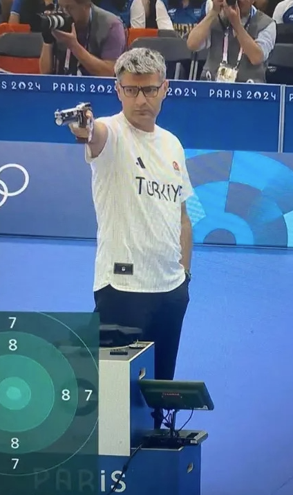
Introducción a {ggplot2}
¿Qué observas?
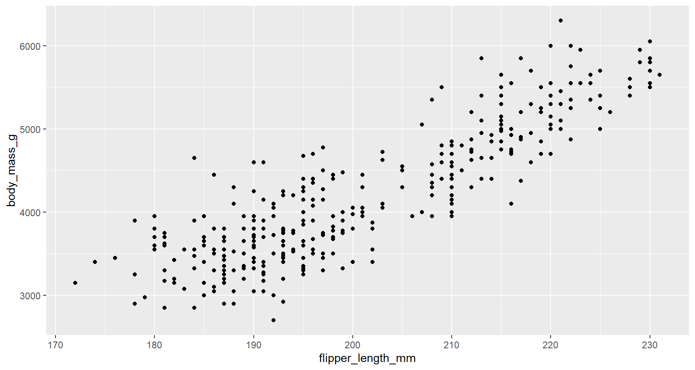
¿Qué relación ves? ¿Qué información falta en este gráfico?
La gramática de los gráficos
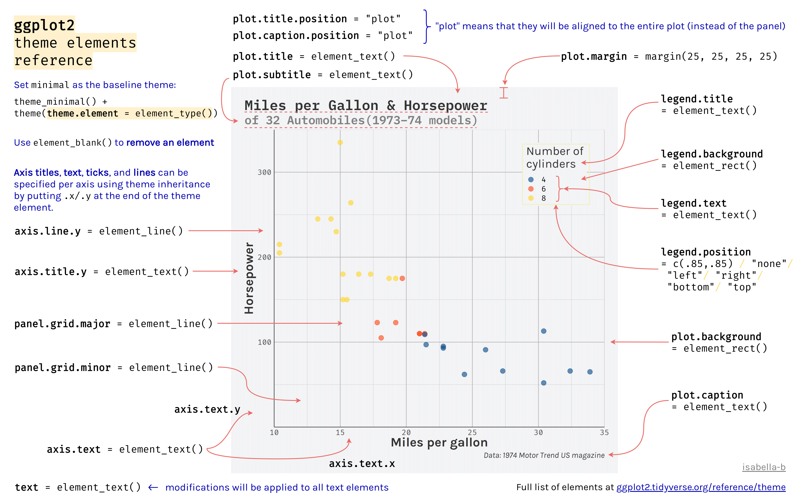
- Datos: la tabla.
- Estéticas (
aes()): qué variable va en el eje x, en el eje y, en el color… - Geometrías (
geom_*()): cómo se dibujan los datos (puntos, barras, cajas…). - Capas: se suman con
+.
Función de inicio

ggplot() prepara el lienzo y los ejes, pero todavía no dibuja nada.
Geometrías

Otras: geom_histogram(), geom_boxplot(), geom_bar(), geom_line(), geom_smooth()…
Mapeo estético
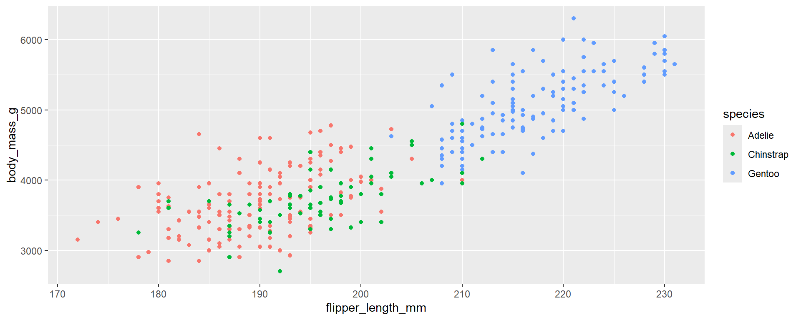
Dentro de aes(), color = species mapea una variable a un color, y {ggplot2} agrega la leyenda.
Dentro o fuera de aes()
Capas
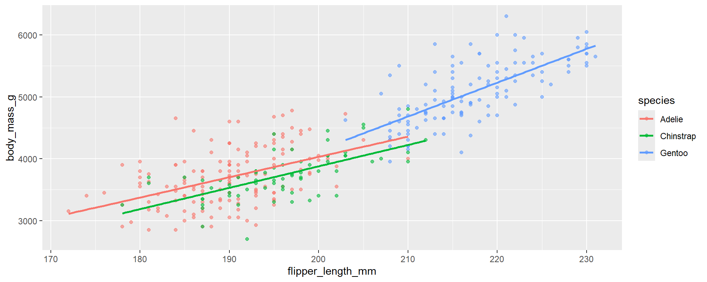
Cada + agrega una capa. Las estéticas de ggplot() las heredan todas las capas.
Otras geometrías
{ggplot2} avisa cuando descarta filas con NA; aquí, las dos sin masa.
Antes de la próxima sesión
- Completa todos los ejercicios del Módulo 2: lo que no alcanzamos en clase, incluida la Parte 4, es tarea.
- Con tus propios datos, escribe una cadena de
{dplyr}que resuma una variable por grupo, y haz un gráfico de dispersión. - Haz la autoevaluación del Módulo 2.
Fin del módulo 2
Créditos
Datos: Gorman KB, Williams TD, Fraser WR (2014), PLoS ONE 9(3): e90081, distribuidos en el paquete {palmerpenguins} (CC0).
Foto final por Alison Pang en Unsplash
Resto de fotos: varias fuentes
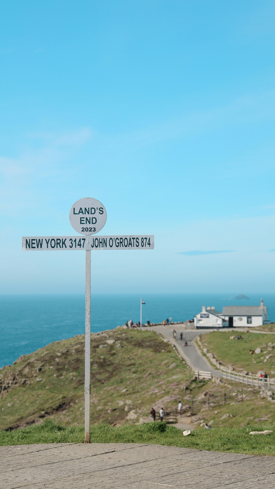